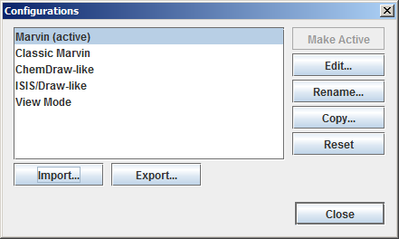

In the Customization section we have described the way
of personalizing the graphical user interface of MarvinSketch. This includes
adding, removing and modifying elements of the interface.
The whole collection of Menubar, Toolbar, Pop-up menu and Shortcut definitions is called Configuration.
The first time MarvinSketch is launched, the GUI is organized according to the default configuration,
called Marvin Configuration.
As soon as any change is made, the configuration becomes
modified, but a new configuration is not created yet, only the modifications are stored.
If the configuration is reset, the modifications will be lost, and it is not possible to restore them.
To prevent this, a configuration should be made which stores the personalized GUI definition.
There are four configurations available by default: Marvin, Classic Marvin,
ISIS/Draw-like* and ChemDraw-like*.
Each one has its own menubars, toolbars, etc.
A configuration can inherit definitions from others. For example the Classic Marvin configuration
inherits the default menubar, pop-up menu and shortcuts definitions, only the toolbars are redefined.
Note, that configurations will not change the behavior of the application,
it only applies to the GUI.
The configuration-related commands can be found in the View > Configurations menu.

The available functions are described in the following table:
| Make Active | Activating a configuration which will not cause to loose modifications if the current configuration is modified. |
| Edit | This will open the Customize dialog with the selected configuration definitions loaded. |
| Rename | Simply changing the name of a configuration. |
| Copy | Creates a new configuration based on the selected one inheriting all GUI definitions. |
| Reset | Returns to the default configuration definitions by dismissing all modifications. This operation cannot be undone. |
| Import | Imports XML or serialized (.ser) configuration file. |
| Export | Exports the active configuration to XML or serialized (.ser) file. |
Screenshots of the four available configurations: